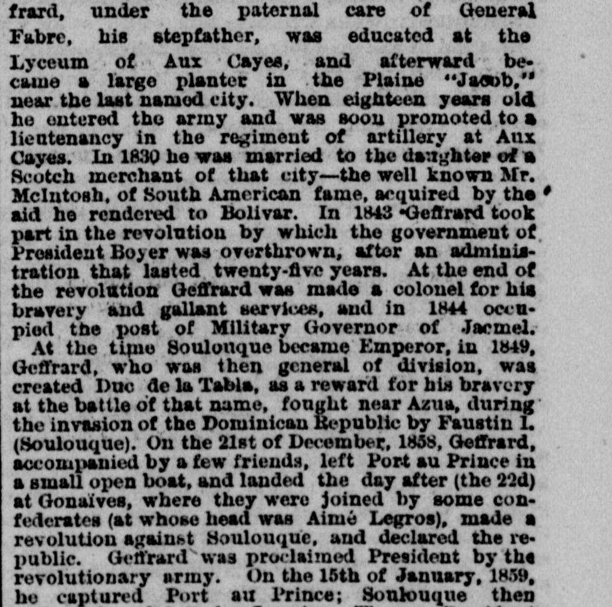
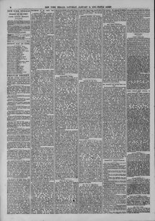

On the 21st of December, 1838, Geffrard, accompanied by a fewEl 21 de diciembre de 1838, Geffrard, acompañado por unos pocos
The New York Herald. New York [N.Y.], January 11, 1879. Page 6. View the originalVer el original


See the full pageVer la página completaThe newspaper reported that Geffrard led a successful revolution against Faustin Soulouque, declaring a republic and being proclaimed President on December 22, 1858, before capturing Port au Prince on January 15, 1859, and eventually abdicating for Jamaica following an 1867 revolution at St. Marc. Geffrard's administration was characterized by efforts to promote education, a concordat with the Holy See, and a period of notable material prosperity and peace for the Republic.El periódico refirió que Geffrard encabezó una triunfante revolución contra Faustin Soulouque, proclamando la república y asumiendo la presidencia el 22 de diciembre de 1858, antes de tomar Puerto Príncipe el 15 de enero de 1859 y abdicar finalmente rumbo a Jamaica tras la insurrección de Saint-Marc en 1867. El gobierno de Geffrard se distinguió por el impulso a la instrucción pública, la firma de un concordato con la Santa Sede y una etapa de palpable bienestar material y sosiego para la República.
FULL TEXT:TEXTO COMPLETO:
frard, under the paternal care of General Fabre, his stepfather, was educated at the Lyceum of Aux Cayes, and afterward became a large planter in the Plaine "Jacob," near the last named city. When eighteen years old he entered the army and was soon promoted to a lieutenancy in the regiment of artillery at Aux Cayes. In 1830 he was married to the daughter of a Scotch merchant of that city--the well known Mr. McIntosh, of South American fame, acquired by the aid he rendered to Bolivar. In 1843 Geffrard took part in the revolution by which the government of President Boyer was overthrown, after an administration that lasted twenty-five years. At the end of the revolution Geffrard was made a colonel for his bravery and gallant services, and in 1844 occupied the post of Military Governor of Jacmel.frard, bajo el cuidado paternal del general Fabre, su padrastro, fue educado en el Liceo de Aux Cayes, y después se convirtió en un gran hacendado en la Plaine «Jacob», cerca de la última ciudad nombrada. Cuando tenía dieciocho años entró en el ejército y pronto fue ascendido a teniente en el regimiento de artillería de Aux Cayes. En 1830 se casó con la hija de un comerciante escocés de esa ciudad—el bien conocido Sr. McIntosh, de fama sudamericana, adquirida por la ayuda que prestó a Bolívar. En 1843 Geffrard tomó parte en la revolución por la cual el gobierno del presidente Boyer fue derrocado, tras una administración que duró veinticinco años. Al final de la revolución Geffrard fue hecho coronel por su valentía y valerosos servicios, y en 1844 ocupó el puesto de Gobernador Militar de Jacmel.
At the time Soulouque became Emperor, in 1849, Geffrard, who was then general of division, was created Duc de la Table, as a reward for his bravery at the battle of that name, fought near Azua, during the invasion of the Dominican Republic by Faustin I. (Soulouque). On the 21st of December, 1858, Geffrard, accompanied by a few friends, left Port au Prince in a small open boat, and landed the day after (the 22d) at Gonaïves, where they were joined by some confederates (at whose head was Aimé Legros), made a revolution against Soulouque, and declared the republic. Geffrard was proclaimed President by the revolutionary army. On the 15th of January, 1859, he captured Port au Prince; Soulouque thenEn el momento en que Soulouque se hizo Emperador, en 1849, Geffrard, quien era entonces general de división, fue creado Duque de la Table, como recompensa por su valentía en la batalla de ese nombre, librada cerca de Azua, durante la invasión de la República Dominicana por Faustino I (Soulouque). El 21 de diciembre de 1858, Geffrard, acompañado por unos pocos amigos, dejó Puerto Príncipe en un pequeño bote abierto, y desembarcó al día siguiente (el 22) en Gonaïves, donde se les unieron algunos confederados (a cuya cabeza estaba Aimé Legros), hicieron una revolución contra Soulouque, y declararon la república. Geffrard fue proclamado Presidente por el ejército revolucionario. El 15 de enero de 1859, capturó Puerto Príncipe; Soulouque entonces